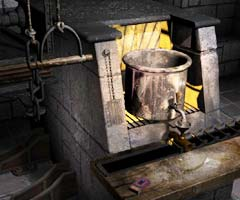
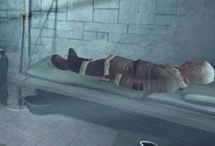

炉
 ・この炉は何に使うものか? ・どうやって動かせばよいか? 何か足りない物はないか? ・この炉には別に使うものは置いてあるか。
壁に絵のある建物
・この建物には誰がいるか? ・この建物にはどのような施設があるのか? ・この建物の絵には何か意味はあるのか?
寝込んだハンス
 ・彼の意識を覚醒させるにはどうしたらよいか? ・彼自身が解決方法を知っているか? ・その解決方法とはどのようなものか?
修道僧
・彼はハンスを回復させる方法を知っているか? ・彼は壁の掃除をしているが、その道具はどこへ置いてあるか?
| 次へ >> |
|